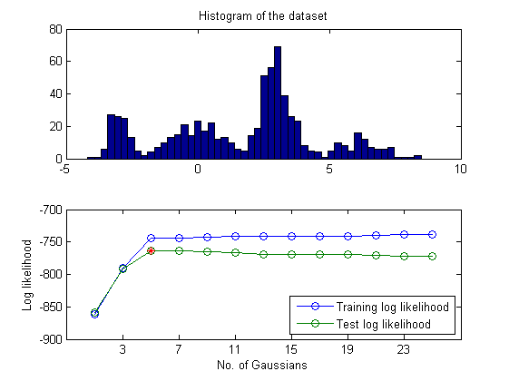

gmmGaussianNumEstimate
Estimate the best number of Gaussians via cross validation
Contents
Syntax
- [bestGaussianNum, trainLl, testLl]=gmmGaussianNumEstimate(trainData, testData)
- [...]=gmmGaussianNumEstimate(trainData, testData, gmmOpt)
- [...]=gmmGaussianNumEstimate(trainData, testData, gmmOpt, plotOpt)
Description
[bestGaussianNum, trainLl, testLl]=gmmGaussianNumEstimate(trainData, testData, gmmOpt) returns the estimated number of Gaussians, together with training and test log likelihood for both the training and test data.
The best number of gaussians is determined according to where the minimum of test log likelihood occurs. (Usually the estimated number of Gaussians is usuallylarger than the desired number of Gaussians, as shown in the example.)
Example
DS=dcData(9); data=DS.input; subplot(2,1,1); hist(data, 50); title('Histogram of the dataset'); trainData=data(:, 1:2:end); testData=data(:, 2:2:end); gmmOpt=gmmTrain('defaultOpt'); gmmOpt.config.gaussianNum=1:2:25; plotOpt=1; subplot(2,1,2); [trainLl, testLl]=gmmGaussianNumEstimate(trainData, testData, gmmOpt, plotOpt);
1/13: No. of Gaussians=1, training LL=-860.930725, test LL=-858.286015 2/13: No. of Gaussians=3, training LL=-789.718374, test LL=-791.185462 3/13: No. of Gaussians=5, training LL=-743.663168, test LL=-764.175428 4/13: No. of Gaussians=7, training LL=-743.582514, test LL=-764.209674 5/13: No. of Gaussians=9, training LL=-743.195778, test LL=-764.464780 6/13: No. of Gaussians=11, training LL=-741.537157, test LL=-765.974641 7/13: No. of Gaussians=13, training LL=-740.710812, test LL=-769.483101 8/13: No. of Gaussians=15, training LL=-740.728070, test LL=-769.180645 9/13: No. of Gaussians=17, training LL=-740.736761, test LL=-769.320668 10/13: No. of Gaussians=19, training LL=-740.617993, test LL=-769.762425 11/13: No. of Gaussians=21, training LL=-739.386800, test LL=-771.148865 12/13: No. of Gaussians=23, training LL=-737.828874, test LL=-771.672656 13/13: No. of Gaussians=25, training LL=-738.260322, test LL=-771.505582